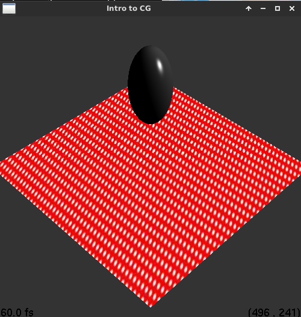
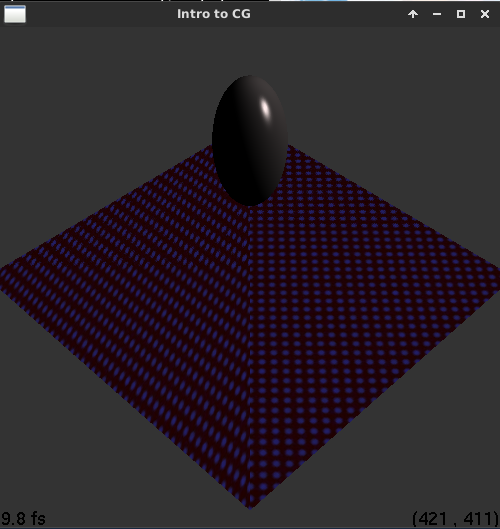

James Wang
jqw3ha
Compiler: g++/gnu | Environment: Linux (Ubuntu 14.04 Trusty) | Platform: 64bit
Late days used: 3
Implemented basic OpenGL functions. Including up to Texture mapping and Call Lists for acceleration.
Mouse drag to rotate the camera is also implemented.
Unimplemented: Box, Cylinder, Cone, Room Scene and so on.
Art submissions: Funky colored texture mapping due to a bug and a slightly modified .ray file for a nice polka-dotted texture.
